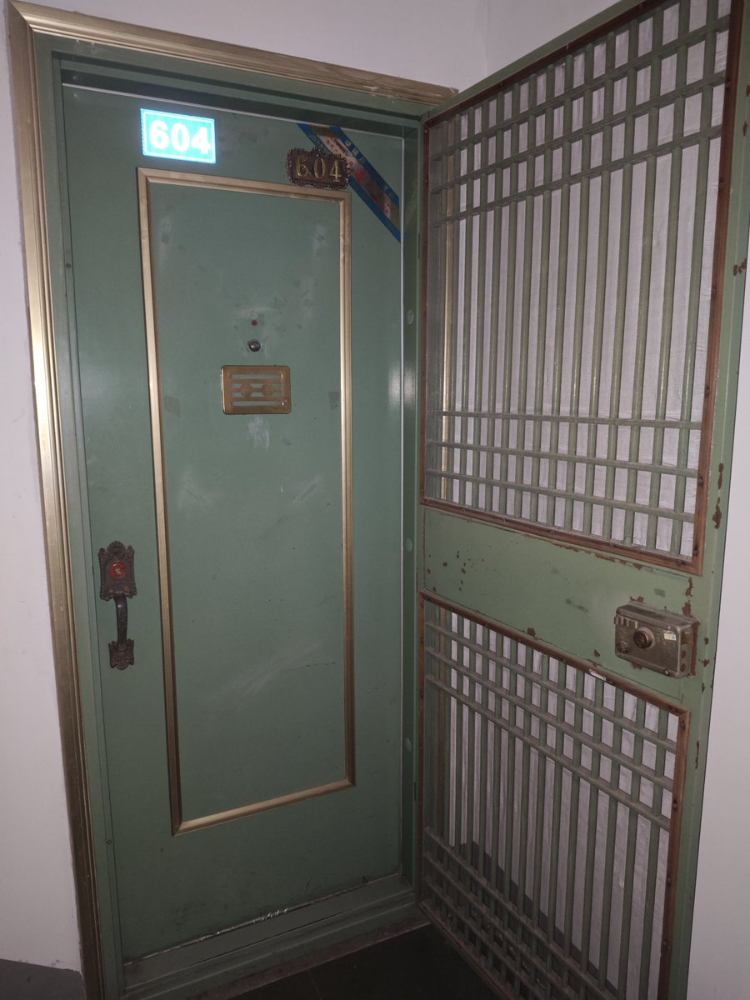

大狐帝国史官邹智萱（笔名段歌文）
@Rococo90933671
2
诡异的是，电梯门打开的时候，映入眼帘的不是照片上我熟悉的门了，而是完全陌生的两道门。
而且电梯也没有和楼梯连接，换句话说，就是通路被电梯门正前方一道防盗窗一样的东西挡住了。
不仅如此，哪怕把防盗窗拿掉，另一边也不是地面，而是悬空的……我有点不明所以，难道是另一栋楼？？？

大狐帝国史官邹智萱（笔名段歌文）
@Rococo90933671
1
我姑姑一家几年前已经搬家了。
今天散步走到他们家老房子下面就上去看了一眼。他们家的楼房应该也是上世纪末盖起来的那种房，和现在的小区房相比肯定是老式的。
我看到，只有他们以前住的这一栋装上外置电梯了。我打算坐这个电梯直接上六楼，因为他们搬家前就住六楼。